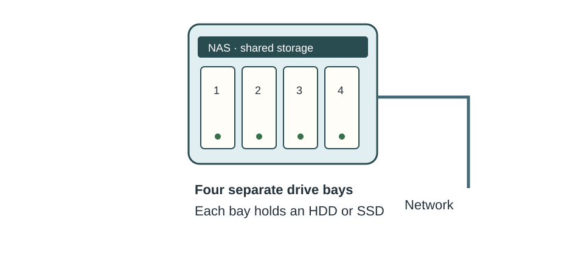
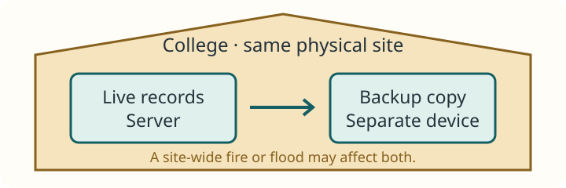
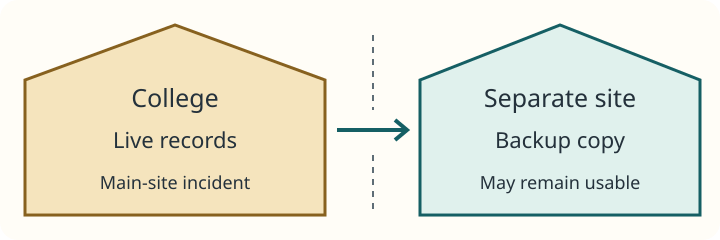

01 · Backup and data recovery
Something went wrong
It is Friday afternoon. The college’s live student-record system becomes corrupted.
Live system · unavailable
Student records cannot be used.
Staff cannot rely on the damaged records for attendance or enquiries.
Thursday backup · available
A recoverable copy exists.
Today’s attendance changes may not be in it.
Staff need service back
What happens now?
Which copy is usable? What work is missing? How soon can staff resume work?
Backups exist because live data can be lost, damaged or made unavailable.
Possible causes include accidental deletion or overwrite, drive failure, corruption, malware/ransomware, a stolen device, or fire/flood affecting a whole site.
02 · Backup and data recovery
Backup vs recovery
Backup · prepare before failure
- Live data
- Create an extra recoverable copy
- Keep the backup separately
Recovery · act after failure
- Failure or data loss
- Restore from a suitable backup
- Check and return usable data/service
Backup creates recoverable copies. Recovery uses them to restore usable data or service after loss or failure.
At the college, Thursday’s backup is a resource. Restoring and checking it on Friday is recovery.
03 · Backup and data recovery
Backup is not just “another copy”
Backup
Keeps a separate recoverable version that can restore earlier usable data.
Synchronisation
Keeps locations aligned. Deletion or corruption may also synchronise; useful version history depends on the service and settings.
RAID/resilience
Can keep service running after certain hardware failures. It does not itself supply an independent earlier version.
Duplication does not automatically mean recoverability. A copy on the same failed drive is not useful; an always-connected copy may also be damaged.
Keep versions for an appropriate period and protect backups from the same incidents as live data. “Latest” is not always “last usable”.
Backup procedures
04 · Backup and data recovery
Full backup
A full backup copies all selected data each time.
Student Records
students.csvattendance.csvcourses.csvcontacts.csv
Monday · full
students.csvattendance.csvcourses.csvcontacts.csv
Restore
For these selected files, a usable full backup can be restored on its own. A whole service may also need software and configuration.
Trade-off
Straightforward to restore, but copying everything usually takes more time, storage and transfer capacity than copying only changes.
05 · Backup and data recovery
Incremental backup
An incremental backup stores changes since the previous backup.
Monday · full
students.csvattendance.csvcourses.csvcontacts.csv
Tuesday · incremental
attendance.csv · changed
Wednesday · incremental
contacts.csv · changed
- Restore Monday full
- Apply Tuesday incremental
- Apply Wednesday incremental
Smaller change sets usually make backups quicker to create, but recovery needs the full backup plus every required later incremental in order.
Wednesday’s incremental does not contain Tuesday’s attendance change. A missing or damaged set can break the restore chain.
06 · Backup and data recovery
Differential backup
A differential backup stores changes since the last full backup.
Monday · full
students.csvattendance.csvcourses.csvcontacts.csv
Tuesday · differential
attendance.csv · changed since Monday
Wednesday · differential
attendance.csv · changed since Mondaycontacts.csv · changed since Monday
- Restore Monday full
- Apply latest Wednesday differential
Differentials usually grow until the next full backup. Recovery generally needs the full backup and the latest suitable differential, not every differential.
The Wednesday set already includes the latest version of the attendance file changed on Tuesday.
07 · Backup and data recovery
Compare backup strategies
Monday starts with all four files. Attendance changes Tuesday, contacts Wednesday and courses Thursday. Each backup runs after that day’s changes.
Full: all selected files are copied each day.
Choose a strategy or simulate recovery.
File badges show which version is stored, not file size. This model uses whole-file changes; it does not access any real files.
08 · Backup and data recovery
Full vs incremental vs differential
| Factor | Full | Incremental | Differential |
|---|---|---|---|
| Backup size | Usually largest | Usually smallest | Usually grows since the full |
| Backup time | Usually longest | Usually shortest | Often between the two |
| Restore | Selected full set | Full + required chain | Full + latest suitable differential |
| Main trade-off | More copying and storage | More restore dependencies | More repeated changes than incremental |
These are typical comparisons, not guarantees. Actual size and time depend on how much changes, the software, media and transfer speed.
Where backups are kept
09 · Backup and data recovery
Where can backups be stored?
External HDD/SSD
Convenient, potentially fast local restores. Can be disconnected and stored separately; capacity and physical handling matter.
Network backup storage/server

Centralised and automated for many devices. If the only copy is onsite or exposed to the same compromise, it may be lost with live data.Magnetic tape
High capacity for large or archive backups; portable and suitable for offline storage. Sequential access can make retrieving particular files slower.
Cloud/remote backup
Can provide geographic separation and automated, scalable storage. Depends on network/service availability, security, subscriptions and restore speed.
Is the storage suitable for the amount of data, the recovery speed needed and the risks?
Recall storage devices: a medium’s features matter because of the task it must perform.
10 · Backup and data recovery
Onsite backups

Benefits
Local access can make recovery quick. The college can control the equipment and avoid an internet download for a local restore.
Risk
Fire, flood or theft at the college may affect live records and the onsite backup. An onsite copy alone does not cover site-wide loss.
Onsite describes location. It does not automatically mean offline or protected from malware.
11 · Backup and data recovery
Offsite backups

Benefits
The copy may survive a disaster affecting the college and provide a recovery route after site-wide loss.
Trade-offs
Getting it back may require a download or transport of media. Network capacity, logistics, cost and recovery time matter.
A backup should not be vulnerable to exactly the same incident as live data. Offsite copies also need protection from unauthorised changes; distance alone does not stop ransomware.
12 · Backup and data recovery
Who manages the backup?
Location and management are separate decisions.
In-house
The college manages the process and infrastructure. It gains control and customisation but needs expertise, staff time, maintenance and clear responsibility.
Third-party
An external provider supplies backup storage or services. Specialist support and scale can help, but recurring cost, privacy/security, service availability and restore speed still need checking.
Onsite + in-house
College IT manages a backup device in another room.
Offsite + in-house
College IT manages protected media stored at a second college site.
Offsite + third-party
A provider manages backups held at a separate location.
Outsourcing does not remove the college’s need to define what is backed up, control access and check that recovery meets its needs.
13 · Backup and data recovery
How often should backups happen?
Daily backup
- 00:00 · last usable backup
- 16:00 · failure
- Up to 16 hours of recent changes at risk
Hourly backup
- 16:00 · last usable backup
- 16:37 · failure
- 37 minutes of recent changes at risk
Choose frequency from how often data changes and how much recent work can reasonably be lost.
These examples assume the scheduled backups completed successfully and no other recovery source exists. A failed job can make the gap longer.
Student records
Attendance changes throughout the day. Losing a full day could require substantial re-entry and checking.
Archive resources
An unchanged archive may need less frequent backups, while new additions still need protection.
Why not continuously?
Frequent copying can increase storage use, bandwidth, system load, cost and complexity. The benefit must justify the resources.
Data recovery
14 · Backup and data recovery
The failure happened. What now?
Return to Friday afternoon: the college’s student records are corrupted, and Thursday’s backup exists.
Identify the damage
What failed? Which records or services are unavailable? Is the damaging cause still active?
Find a usable point
Is Thursday’s backup complete and earlier than the corruption? Are its required backup sets available?
Agree the need
What recent attendance work is missing? How soon must staff regain access? Which safe temporary process can they use?
Do not assume the newest backup is usable. Select a version from before the damage and restore into a safe environment.
15 · Backup and data recovery
Recovery procedure
- 1 · Identify
Establish failure, scope and a safe restore destination. - 2 · Select
Choose a known usable version and all required backup sets. - 3 · Restore
Recover the required data/system in the right order. - 4 · Verify
Check files, completeness, version and permissions. - 5 · Return service
Let users resume once checks succeed.
For the college, opening students.csv is not enough: check the expected student records, attendance version and authorised staff access.
Record missing recent changes for controlled re-entry where a reliable source exists. Restoring Thursday’s copy does not recreate Friday’s unsaved attendance.
16 · Backup and data recovery
What should be restored first?
A major failure affects several college services. Do all of them need to return at the same time?
Safety and urgent work
Safeguarding/student records may be critical for student support. Attendance matters when lessons are taking place.
Current staff work
Shared folders may contain urgent operational work—or material that can wait. Check who is affected and deadlines.
Less urgent archives
Old reports and archived lesson resources may wait if they are not needed for current teaching or an urgent obligation.
- Identify critical work
- Check supporting-system dependencies
- Agree an order and communicate it
Priorities depend on criticality, users affected, safety/legal importance, dependencies and time sensitivity—not simply file size.
For example, essential access services may need to return before staff can use restored student records. There is no universal order for every incident.
17 · Backup and data recovery
Having a backup is not enough
Strategy A · 36 hours
Lower cost, but a day and a half without student records.
Strategy B · 2 hours
Higher cost, but much less disruption to staff and student support.
If the college needs records available within a few hours, Strategy B better meets that need—provided a test confirms the time and the college can fund it.
A backup strategy must restore data quickly enough for the organisation’s needs.
Amount and media
Large backups take time to read and transfer; sequential or slower media can delay retrieval.
Connection and process
Internet bandwidth can limit remote restores. An incremental chain adds restore steps.
Beyond copying
Verification, permissions, supporting services and reopening access also take time.
18 · Backup and data recovery
How do you know a backup works?
A backup is not proven until it has been successfully restored and checked.
- Backup created
- Test restore in a safe separate location
- Open and check data
- Verify completeness and access
- Document results and fix problems
Data problems
Corrupt backup, missing files or incomplete backup scope.
Access problems
Wrong permissions or unavailable encryption keys/credentials.
Process problems
Broken instructions or a restore that takes longer than expected.
A successful job message is useful evidence, but it is not a restore test. Test representative data and procedures regularly; a successful sample does not guarantee every future restore.
19 · Backup and data recovery
Why RAID is not a backup
Drive fails
A suitable fault-tolerant RAID setup may keep service running while a failed drive is replaced.
students.csv is deleted
The deletion affects the live RAID data too. RAID does not create an earlier copy to restore.
Ransomware encrypts files
RAID stores the encrypted live data too. A protected usable backup is still needed.
Fire destroys the server
The drives in the server can be lost together; a separate offsite backup may survive.
RAID improves resilience/availability in suitable configurations. It does not replace a separate recoverable backup.
Recall RAID and NAS: not every RAID level tolerates a drive failure. Availability and historical recovery solve different problems.
Designing a backup strategy
20 · Backup and data recovery
What makes a good backup strategy?
What?
Critical data and the supporting information needed to restore it.
How?
Full, incremental or differential, with all required sets retained.
How often?
Match change rate and acceptable recent data loss.
Where?
Onsite, offsite or both; consider shared risks and protection.
Who?
In-house staff or a third-party service with clear responsibilities.
How fast?
Set a recovery need from organisational impact and priorities.
Does it work?
Test restores, check data/access and measure the recovery time.
Choose a complete recovery route, not just somewhere to store files.
21 · Backup and data recovery
Choose a backup strategy
A small college has student records changing throughout the day, 1 TB of archived teaching resources, one onsite server, reliable fast internet and limited IT staff. Student records cannot be unavailable for long.
Choose a plan and justify each decision. Feedback reviews the trade-offs; a matching reason does not make the whole strategy suitable.
Backup type
Student-record frequency
Backup location
Who manages it?
What should your recovery plan include?
Your written plan saves in this browser.
Compare with an example judgement
Scheduled full backups plus frequent incremental backups could reduce copying for active records, provided the chain restores within the college’s downtime limit. A slower archive schedule can protect new additions without repeatedly copying unchanged resources. Local and protected offsite copies cover different risks; specialist help may suit limited staff, if cost, access and recovery arrangements are acceptable.
Prioritise critical records and their dependencies. Identify a usable version, restore into a safe environment, check completeness and permissions, then return service. Test the whole process and account for attendance changes since the last usable backup. A differential or full strategy can also be justified if measured costs and recovery performance fit.
Practice
22 · Backup and data recovery
Common exam mistakes
“RAID is a backup”
Resilience does not supply an independent historical copy.
“Cloud sync is a complete strategy”
Deletion/corruption may propagate. Check recoverable versions and their protection.
“Incremental means since the full”
Incremental means since the previous backup. Differential means since the last full.
“Restore every differential”
Normally restore the full plus the latest suitable differential.
“A backup exists, so recovery is solved”
It may fail to restore, omit needed data or take too long.
“Offsite means third-party”
Location and management are separate choices.
23 · Backup and data recovery
Check your understanding
Answer all 14 questions, then check your score. Aim for 10 correct. Your answers and best score save in this browser.
24 · Backup and data recovery
Exam-style practice
Apply your reasoning to the organisation, then weigh the relevant trade-offs. These are practice questions, not an official mark scheme.
Draft answers save automatically in this browser.
Question 1
Explain two reasons why an organisation should keep backups.
Show answer guide
- Accidental deletion/overwrite can remove earlier useful records; a separate backup version allows them to be restored.
- A drive or site failure may make live data unavailable; a usable separate copy helps restore work and reduce disruption.
- Develop two distinct cause → recovery benefit links for four marks. Other applied causes, such as corruption or malware, can be used.
Question 2
Explain the difference between incremental and differential backups.
Show answer guide
- Incremental stores changes since the previous backup; in the college example Wednesday contains the contacts change, while Tuesday’s attendance change remains in the Tuesday set.
- Differential stores changes since the last full; Wednesday includes both attendance and contacts changes.
- Link this difference to full + required incremental chain versus full + latest suitable differential. Do not give two definitions without explaining the difference.
Question 3
Discuss the advantages and disadvantages of storing backups offsite.
Show answer guide
- A copy outside the college can survive an incident confined to its building, allowing recovery after local equipment is lost.
- Retrieval may depend on download speed or transporting media, delaying access to urgent student records.
- Extra storage/service/logistics cost and protection of sensitive data must be considered. Offsite is not necessarily outsourced.
- Weigh location protection against recovery needs. Local plus offsite copies may balance speed and risk if resources allow.
Question 4
Explain why an organisation should test its data-recovery procedures.
Show answer guide
- Restoring representative records can reveal corrupt or missing files and incomplete backup scope before an emergency.
- Checking versions, permissions and required credentials shows whether staff can actually use restored information.
- Timing the complete process can reveal that the chosen media, transfer or backup chain cannot meet the college’s downtime need.
- Develop three problem → organisational effect → test benefit links. Document fixes and retest; successful copying alone is insufficient.
Question 5
Analyse factors a college should consider when deciding how frequently to back up student records.
Show answer guide
- Attendance and contacts can change during the day, so daily backups may leave significant re-entry or lost updates after an afternoon failure.
- Explain acceptable recent loss in terms of student support and staff work; tighter tolerance may justify hourly copies.
- Frequent backups use storage, bandwidth, processing time and support. Change-based backups can reduce repeated copying, with restore dependencies to manage.
- Consider the backup window, monitoring of failed jobs and whether a recent usable copy is actually available.
- Distinguish frequency from recovery speed. Reach a justified balance; the largely unchanged archive may use a different schedule.
Question 6
A college stores student records, teaching resources and archived reports on a central system. Evaluate an appropriate backup and recovery strategy.
Show answer guide
- Prioritise critical student records and required services; justify why some archive material can wait, while recognising urgent teaching dependencies.
- Propose full backups with an appropriate incremental/differential schedule or justify full-only copying. Explain backup workload versus restore complexity.
- Set frequency from change rate and acceptable recent loss; use a different schedule for largely unchanged archives and new additions.
- Choose media/location to balance quick local recovery with protected copies away from the main site. Explain same-site and malware risks.
- Weigh in-house expertise against third-party support, recurring costs and service/restore arrangements. Outsourcing does not remove oversight.
- Describe identifying damage, choosing a usable version and required sets, restoring, checking data/access and returning service. Test the recovery time and document failures.
- For higher marks, connect these choices and reach a conditional judgement based on college needs, cost and measured recovery performance. Simple feature lists are insufficient.